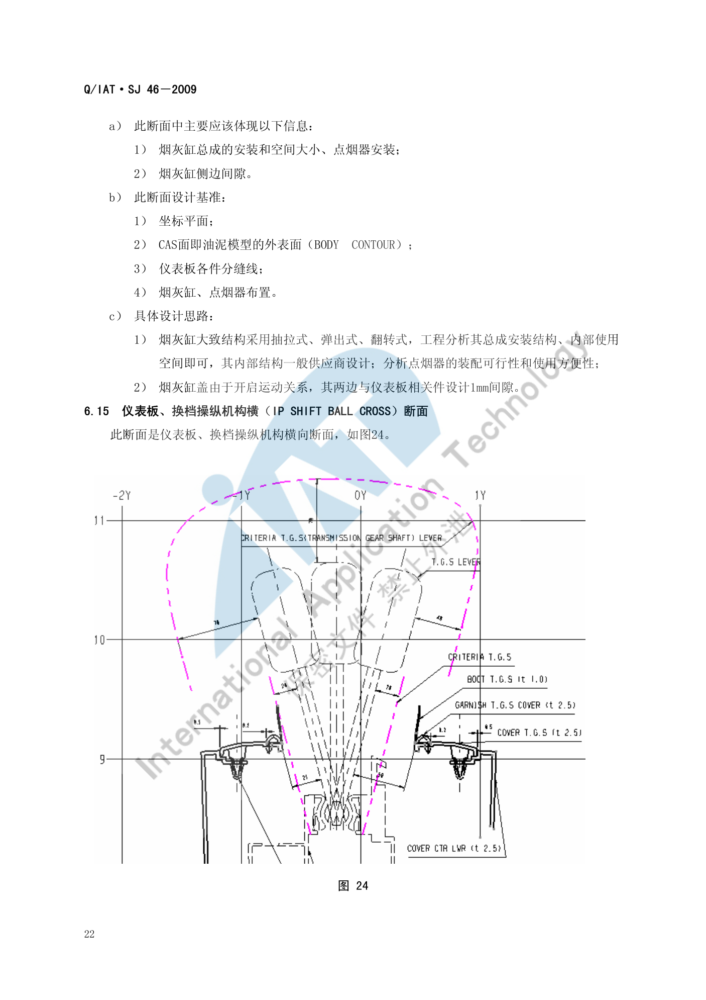
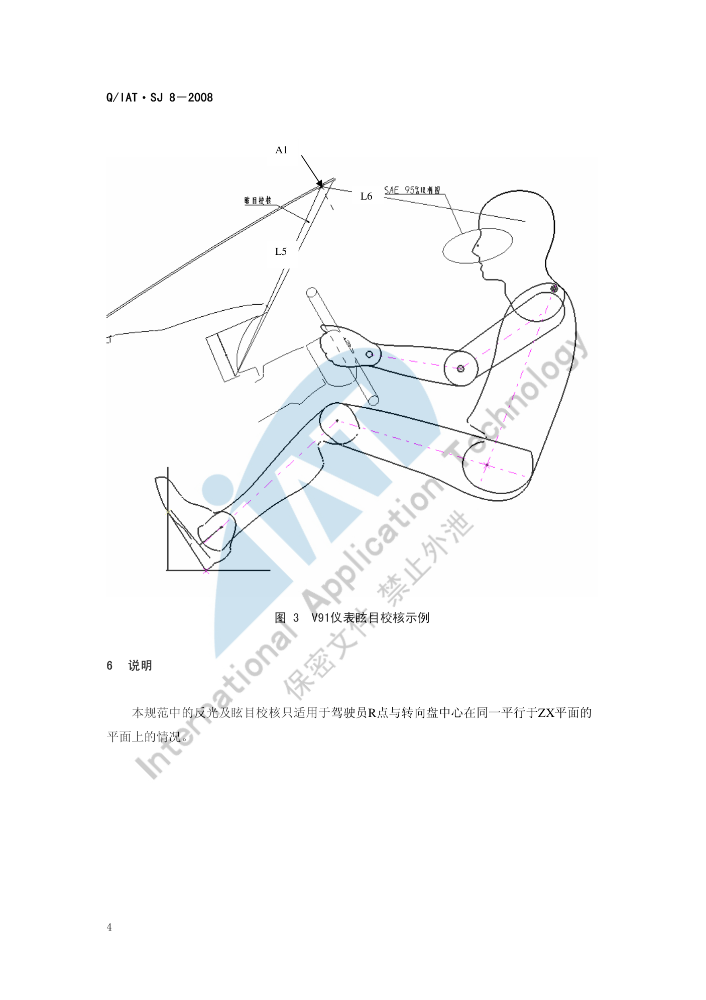

IP&CNSL 校核标准¶
内容来源
本页正文抽取自《总布置》知识库中**可文本解析**的文件：
SJ 46-2009 仪表板SEG分析设计指导书、SJ 47-2009 吹面出风口设计指导书、
SJ 8-2008 仪表反光及眩目设计规范、SJ 39-2009 汽车操纵件标志及指示装置法规校核规范、
SJ 50-2009 仪表板装配设计指导书、SJ 9-2008 A类汽车眼椭球、头部包络面设计规范、
SJ 15-2008 手伸及界面设计规范、《通用汽车设计标准》U02_PushBttn。
企业规范编号原样保留。
校核体系¶
flowchart LR
N0["IP&CNSL<br/>校核体系"]
N1["间隙校核"]
N0 --> N1
N2["静态间隙 各件配接"]
N1 --> N2
N3["面差 外观"]
N1 --> N3
N4["极限位置校核"]
N1 --> N4
N5["公差补偿"]
N1 --> N5
N6["走线空间"]
N1 --> N6
N7["人机校核"]
N0 --> N7
N8["反光校核 L1-L4"]
N7 --> N8
N9["眩目校核 L5-L6"]
N7 --> N9
N10["出风口吹风区域"]
N7 --> N10
N11["手操作空间 90-100mm"]
N7 --> N11
N12["手伸及界面"]
N7 --> N12
N13["视野与盲区"]
N7 --> N13
N14["法规与安全校核"]
N0 --> N14
N15["GB 11552 内部凸出物"]
N14 --> N15
N16["GB 11551 正面碰撞"]
N14 --> N16
N17["GB 4094 操纵件标志"]
N14 --> N17
N18["GB 11556 除霜除雾"]
N14 --> N18
N19["头部碰撞区"]
N14 --> N19
N20["校核时机"]
N0 --> N20
N21["效果图阶段"]
N20 --> N21
N22["CAS 阶段"]
N20 --> N22
N23["油泥阶段"]
N20 --> N23
N24["A面与详细设计"]
N20 --> N24概述¶
要点¶
IP&CNSL 区域的校核分为**间隙、人机、法规与安全**三类，每类都有明确的量化判据与校核时机：
| 类别 | 判据来源 | 主要校核项 |
|---|---|---|
| 间隙与面差 | SJ 46-2009 各断面设计思路 |
各件配接间隙、外观面差、极限位置间隙、走线空间 |
| 人机 | SJ 8-2008、SJ 47-2009、SJ 15-2008、SJ 9-2008 |
仪表反光/眩目、出风口吹风区域、手操作空间、手伸及界面、视野与盲区 |
| 法规与安全 | GB 11552-1999、GB 11551-2003、GB 4094-1999、GB 11556-94 |
内部凸出物、正面碰撞小腿/膝盖保护、操纵件标志、除霜除雾 |
| 装配可行性 | SJ 50-2009 |
装配顺序、定位方式、工具空间、最小距离 |
示例¶
校核的**载体是 SEG 断面**：每个断面在"设计思路"中都固定附带"需要校核的问题点"，这使校核项天然可追溯。驾驶员处纵向断面是最密集的一个：

注意事项¶
- 校核时机必须与造型阶段同步：
QCD-A0-005/QCD-A0-006要求概念草图与效果图阶段就把视野、人机等项校核到位，IP 区域的大量间隙又依赖 CAS 面，因此实际节奏是"每个造型版本都要重跑对应断面"。 - 校核数据状态必须记录：间隙值对数据版本敏感，结论必须注明依据的数据版本与状态（空载/满载、造型阶段）。
间隙校核¶
要点¶
（1）IP 内部与配接间隙汇总（SJ 46-2009 各断面）
| 校核项 | 要求 | 出处 |
|---|---|---|
| 仪表罩与组合仪表 | 3 mm | §6.1 |
| 组合仪表左右两端与仪表板本体 | 最小间隙 > 3 mm | §6.3 |
| 转向管柱护罩各极限位置与仪表板各件 | ≥ 5 mm | §6.1 |
| 左下护板与转向管柱护罩 | 最小间隙 5 mm | §6.4 |
| 左下护板与中下饰板 | 间隙 0.5 mm | §6.4 |
| 左下护板与前门护板 | 间隙 6 mm | §6.5 |
| 仪表板本体与侧围内板 | 最小间隙 10 mm | §6.5 |
| 开关组面板与左下护板搭接边宽度 | ≥ 5 mm | §6.5 |
| 除霜风道与 A 柱盖板风口海绵密封条压缩量 | 3 mm ～ 5 mm | §6.6 |
| A 柱盖板面上边界低于仪表板外表面（面差） | 1 mm ～ 6 mm，间隙 0.5 mm | §6.6 |
| A 柱卡脚与仪表板外端 | 间隙 0.2 mm 或 0；内端与仪表板装配空间 2 mm | §6.7 |
| 引擎盖扣手开启手操作空间 | ≥ 25 mm；开启最大角度时与仪表板间隙 ≥ 1.5 mm | §6.8 |
| 仪表板总成定位支架与前围 | 间隙 3 mm | §6.10 |
| 仪表板本体与风挡玻璃 | 间隙 5 mm | §6.10 |
| 风挡黑区线 Z 向高于仪表板本体 | ≥ 5 mm | §6.10 |
| 仪表板本体前端与前围 Z 向间隙 | ≥ 5 mm（保证装配调整空间） | §6.10 |
| 管梁周边（安装主线束与仪表板线束） | 至少 φ20 mm 空间 | §6.10 |
| 风道与 DVD 后端 | 间隙 ≥ 25 mm | §6.10 |
| 电气开关组、空调控制开关、烟灰缸 | ≥ 20 mm 走线空间 | §6.10 |
| 中控面板左右侧与仪表板左右下护板 | 外观间隙 0.5 mm | §6.13 |
| 空调控制开关圆形旋转按钮与中控面板 | 间隙 1 mm | §6.13 |
| 烟灰缸盖与仪表板相关件（两侧，因开启运动） | 间隙 1 mm | §6.14 |
| 风道与安全气囊 | 间隙 ≥ 10 mm | §6.16 |
| 空调与仪表板 | 间隙 10 mm | §6.16 |
| 手套箱周边 | 间隙一般 2 mm | §6.16 |
| 吹面/除霜风道与周边 | 间隙 5 mm 左右 | §6.1 |
| 隔栅框架与出风面板 | 面差建议 0.2 mm | SJ 47 §5.2 |
| 出风口叶片与出风面板 | 间隙 1.0 mm ～ 1.5 mm | SJ 47 §5.2 |
| 仪表罩自攻螺钉头圆头面低于仪表罩外表面 | 2 mm | §6.2 |
| 仪表板整体机械装配与所有钣金、内饰件 | 最小距离 10 mm | SJ 50 §4.1.3 |
| 固定销插入定位孔后，仪表板固定臂周边 | 10 mm 间隙 | SJ 50 §4.1.2 |
（2）装配定位与公差补偿（SJ 50-2009 §4.1.2）
仪表板管梁两端沿同一 Z 方向有两个固定孔，构成**主副定位 + 公差补偿**的标准做法：
| 孔位 | 形式 | 作用 |
|---|---|---|
| 顶端 | 直径 15 mm 圆孔 | 主定位 |
| 底端 | 13.5 mm × 15 mm 长圆孔，与顶端孔距离 105 mm | 补偿制造与装配公差 |
（3）装配方向（SJ 46-2009 §6.10）
仪表板总成装配一般含风道、安全气囊等，装配时**在装配方向上不能与空调、管梁、前围、侧围发生干涉**，定位与装配方向据此设定。当空调和管梁在仪表板之前装配时，装配方向设定为 15°。
示例¶
中控面板与换挡操纵机构横向断面是 CNSL 区域间隙最密集的断面（换档盖板卡接结构、换档操纵机构与仪表板间隙）：

注意事项¶
- 公差累积与极限状态校核：上表间隙多为"标称设计值"，实际必须做极限状态校核——管梁两端圆孔+长圆孔的定位方案本身就是为了吸收公差；左下护板在碰撞时的 X 向变化（≤ 30 mm）是**变形后**的要求，与静态间隙不是一回事，不可混用。
- **极限位置**是漏项高发区：转向管柱的倾角/伸缩极限、烟灰缸盖开启、手套箱开启、引擎盖扣手最大角度，每一项都要单独校核。
- 走线空间（φ20 mm、≥20 mm、≥25 mm）极易被忽视，但它决定后期线束能否装配，必须在断面阶段预留。
人机校核¶
要点¶
（1）仪表反光与眩目校核（SJ 8-2008）
| 校核项 | 方法 | 合格判据 |
|---|---|---|
| 反光 | 过 R 点（或中间眼椭圆中心）作平行于 ZX 平面的平面；由眼椭圆上边与转向盘上轮缘下表面作切线与仪表反光面相交，作眼椭圆的切线并求反射线 L1、L2；同法由眼椭圆下边与轮毂上表面得 L3、L4 | L1～L4 组成的最大区域（即能反射到眼椭圆的全部入射光区域）必须被组合仪表罩下帽沿全部遮挡 |
| 眩目 | 过仪表盘最下沿作仪表帽沿切线 L5，求与前风挡玻璃内表面交点 A1；若 A1 在玻璃黑区之下则作反射线 L6 | A1 在**玻璃黑区之内或之上** → 不眩目；L6 在**眼椭圆上部** → 不眩目；L6 与眼椭圆相切或在**眼椭圆内部/下部** → 存在眩目 |
适用范围限制：仅适用于**驾驶员 R 点与转向盘中心在同一平行于 ZX 平面的平面上**的情况；反光校核**不适用于从侧窗玻璃入射的光线**。
（2）出风口吹风区域校核（SJ 47-2009）
| 校核项 | 要求 |
|---|---|
| 出风口中心与眼椭圆中心 X 向距离 | 600 mm ～ 800 mm |
| 出风口中心与驾驶员中心 Y 向最小距离 | 380 mm |
| 眼椭圆中心与 H 点 X 向距离 | 80 mm |
| 出风口下边缘与 H 点 Z 向最小距离 | 380 mm（左侧出风口 240 mm） |
| 吹风目标区域余量 | 左右、上下各大于目标区域 (5～10) 度 |
| 四出风口出风量比例 | 左 : 中左 : 中右 : 右 = 2 : 3 : 3 : 2 |
（3）手操作空间与可达性
| 校核项 | 要求 | 出处 |
|---|---|---|
| 仪表罩与方向盘手操作空间 | 一般 ≥ 90 mm；1 L 左右微轿 ≥ 70 mm；大排量 SUV/商务/商用 ≥ 100 mm | SJ 46 §6.1 |
| 引擎盖扣手开启手操作空间 | ≥ 25 mm | SJ 46 §6.8 |
| 换挡手柄包络、手刹包络 | 必须落在驾驶员**手握式手伸及界面**之内；推荐用 Ramsis 校核 95%/50%/5% 假人的不舒适度并与竞品对比 | QCD-A0-005 §4.3 |
| 手伸及界面生成 | 由 A40/H30/W9/H18/L11/H17/A42/L53 算 G 因子 → 求参考坐标系 → 选 SAE J287 表格 → 点云连面 | SJ 15-2008 |
| 空挡换挡操作点 | 距 EO 点 530～580 mm（推荐 555 mm） | SJ 6-2008 §4.4 |
| 驻车制动操作点 | 距 EO 点 550～670 mm（推荐 595～640 mm） | SJ 6-2008 §4.5 |
| 按钮类控制件 | 尺寸 ≥ 10 × 10 mm；中心到边缘 ≥ 13 mm；中心到中心 ≥ 19 mm；位移 1.5～3.5；操作力 2.8～11.0 N | GM U02 |
（4）视野与盲区
- 仪表板本体与仪表罩外表面**不超过前方的下视野线**，且预留**与下视野线 0.5° 角以上余量**（
SJ 46§6.1、§6.10）； - 仪表罩下边缘**不超过仪表的发光表面**；
- 仪表板盲区、立柱盲区的判定使用**眼椭球**（95%/99% 百分位）与视线联合求作（
SJ 9-2008）。
示例¶
V91 车型仪表眩目校核示例：切线 L5 与前风挡玻璃内表面交于 A1，反射线 L6 是否落入眼椭圆决定眩晕是否成立：

注意事项¶
- 不同百分位人体的覆盖要求：眼椭球/头部包络面按 95% 与 99% 两个百分位制作，前乘客区按 99%、后乘客区按 95%（
SJ 18-2008）；手伸及界面则需覆盖 95%/50%/5% 三个百分位——两套百分位体系不要混用。 - 反光校核的"侧窗入射"是明确的**排除项**：这不是疏漏，而是标准适用范围所限；若项目关注侧窗反光，需另行定义。
- 中控屏幕的反光/眩光没有直接对应的企业规范（
SJ 8-2008的对象是仪表反光面），需类比校核。
法规与安全校核¶
要点¶
（1）内部凸出物（GB 11552-1999 轿车内部凸出物，等效采用 74/60/EEC 及 78/632/EEC）
| 判据 | 内容 |
|---|---|
| 尖棱定义 | 曲率半径小于 2.5 mm 的刚性材料棱边，但**不包括从仪表板表面测量凸出高度小于 3.2 mm** 的构件 |
| 圆钝例外 | 若凸出物的**凸出高度不大于其宽度的一半且边缘圆钝**，可不规定最小曲率半径 |
| 格栅零件 | 满足下表则视为符合规定 |
| 格栅间距 (mm) | 最小片厚 e | 平端格栅最小半径 | 圆端格栅最小半径 |
|---|---|---|---|
| 1–10 | 1.5 | 0.25 | 0.50 |
| 10–15 | 2.0 | 0.33 | 0.75 |
| 15–20 | 3.0 | 0.50 | 1.25 |
此外，SJ 46-2009 §6.16 要求乘员侧断面**在头部碰撞基准区内满足 GB 11552-1999 对应要求**。
（2）正面碰撞乘员保护（GB 11551-2003 乘用车正面碰撞的乘员保护、ECE R94）
| 指标 | 限值 |
|---|---|
| 小腿压力指标 TCFC | 不超过 8 kN |
| 每根胫骨两端所测**胫骨指数 TI** | 不超过 1.3 |
设计对策（SJ 46-2009 §6.1、§6.4）：
- 以**脚踝为中心、R265～R437 为半径**的区域设计碰撞缓冲，可做成**缓冲块或缓冲筋**的形式；
- **膝盖保护区域**为"以腿中心和膝盖外侧 15° 之间"的区域；
- 左右膝盖两个保护区域内，左下护板外表面在 X 方向上的最大变化距离应在 30 mm 以内，以保证碰撞时左右两腿受力均匀；
- 手套箱横向断面（右下护板）的膝盖保护方法与左下护板相同；要加强强度处采用**螺钉连接**，其他部位可用卡扣连接。
（3）操纵件标志及指示装置（GB 4094-1999，校核方法见 SJ 39-2009；词汇依据 GB/T 4782-1984）
| 基本要求 | 内容 |
|---|---|
| 强制标示 | 装备标准 §4.2.1 所列操纵件、指示器及信号装置时，**其相应标志必须标示**且必须符合规定 |
| 非强制标示 | 装备 §4.2.2 所列者，标志**非强制**；但一旦标示则必须符合规定 |
| 相似标志 | 使用相似标志时亦应符合规定 |
| 可识读性 | 标志相对于底色应清楚、醒目，且**永久保持**；应保证**驾驶员在其座位上能够识别** |
| 多功能件 | 多功能操纵件上必须具有其各功能的相应标志 |
| 组合装置 | 同一功能的组合式指示器和信号装置**可以用一个标志** |
| 不得混淆 | 用于其他目的的标志**不得与本标准规定的标志相混淆** |
| 信号颜色 | 信号装置的显示颜色必须符合标准规定 |
| 标志位置 | 标志必须位于**操纵件或其工作位置上**；对于指示器及信号装置，标志必须位于**其上** |
典型标示位置（SJ 39-2009 表 1 示例）：灯光总开关/远近光/位置灯/转向指示灯/刮水器洗涤器组合操纵件 → 组合开关；前/后雾灯开关 → 左下装饰板；危险报警灯操纵件 → 中控面板。
（4）除霜除雾（GB 11556-94，与出风口/风道耦合）
- 前风挡除霜的出风角度与距离设定见
SJ 48-2008§7.2.1"前除霜口的吹风方向"； - 除霜风道与 A 柱盖板风口海绵密封条**压缩 3～5 mm**，风口布置**靠盖板中下处**以保证除霜效果（
SJ 46§6.6）。
示例¶
校核的法规区域与断面必须一一对应：例如乘员侧断面（SJ 46-2009 §6.16）需在该断面上同时体现 GB 11552-1999 的**头部碰撞基准区**要求、风道走向与各件间隙、乘客安全气囊固定结构，以及手套箱的空间、旋转中心、旋转角度与开启扣手形式。
注意事项¶
- 校核时机与数据状态要求：法规项必须在**造型各阶段**用固定清单逐项打勾并保留"结论 + 图片示意"两栏留痕（
EDD-A0-005-1/-2）；装配相关校核（SJ 50）需在数据具备装配特征后进行，过早校核无意义。 - 标志校核最易漏项：
SJ 39-2009明确"多功能操纵件上必须具有其各功能的相应标志"，多功能组合开关、多功能方向盘的标志完整性应逐功能核对。 - 小腿/膝盖保护是**结构设计项**而非几何布置项：总布置能确定保护区域与变形量限值，具体缓冲块/筋的刚度需 CAE 反复迭代。
待人工补充¶
以下条目无法自动提取或知识库中无对应条款，需人工补充
SJ 46-2009的图 1（断面分布图）为图片页，30 个断面的**总清单与分布位置**需人工从原图整理 （本页已从正文梳理出 §6.1～6.17 共 17 个典型断面的名称与设计要点）；SJ 39-2009的表 1～表 3（操纵件标志、指示器标志、信号装置颜色）为**表格图片**， 本页仅提取到表头与部分项目，完整标志清单需人工查阅原文；- **中控屏幕**的反光/眩光、亮度与指纹可视性：无直接对应企业规范；
- **杯托尺寸、中央扶手高度**等 CNSL 专属条款：知识库中未见；
- 知识库中以下文件虽相关但因读取问题**未采用**：
AEM-A4-003 内部凸出物校核规范、AEM-A5-201 手伸及界面及仪表控制面板校核规范与流程、AEM-A5-309 组合仪表布置规范。
建议：在 IMA 客户端中打开对应文件补充条款，或按"规范编号 + 页码"方式人工引用。